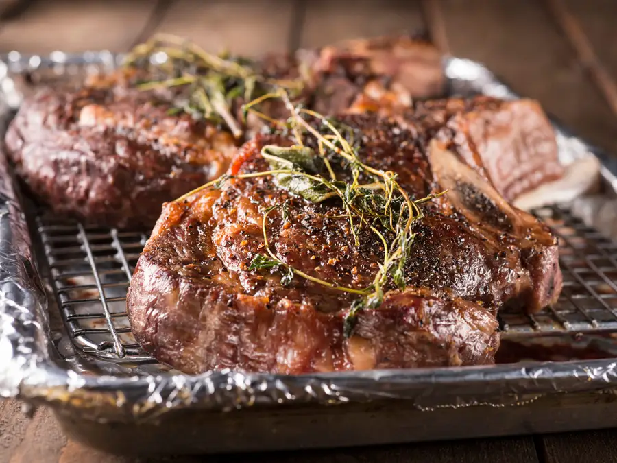

Reverse Seared Steak

This recipe shows you how to grill a steak...except the opposite way! You'll learn this mouth watering way to prepare this spicier version of a steak.
There are two types of steaks. Either bone in or boneless.
What makes reverse searing different is that the steak is cooked before you sear it.
...then after the steak has been cooked to the proper tempterature, the chef will then and only then sear it
Necessary Ingredients:
- 44oz tomahawk chop
- paprika
- granulated garlic
- chili powder
- kosher salt
- coarse sea salt
- cilantro
- lime
- salsa verde hot sauce
Steps to preparation:
- mix the spices in a bowl
- liberally coat the tomahawk chop
- set the oven to 225࠽ and bake the chop for 15 minutes
- heat a frying pan up and season with grapeseed oil
- chop cilatro and cut lime in half for squeezing
- remove chop and sear on both sides
- top with cilantro, lime and salsa verde